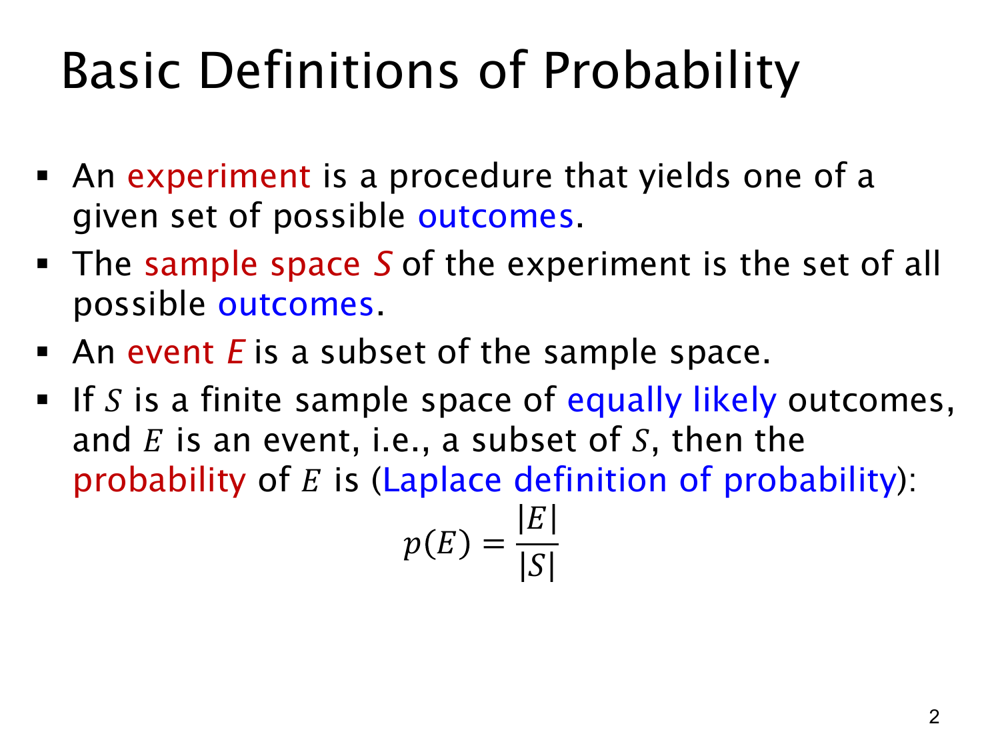

L1.9 · 第 2 页讲解原文
查看这一页课件

试验、样本空间、事件与 Laplace 概率
这一页建立概率的基本语言。
试验（experiment）是一个会产生某个结果的过程，例如掷一次骰子。结果（outcome）是这一次实际发生的情况，例如掷出 4。样本空间（sample space）记作 S，包含这次试验所有可能的结果：
S={1,2,3,4,5,6}.
事件（event）记作 E，是样本空间的子集。例如“掷出偶数”对应
E={2,4,6}⊆S.
一次试验虽然只产生一个结果，但一个事件可以包含多个结果。当实际结果落在 E 内，就说事件 E 发生。别把“事件”理解成必须只有一个结果。
课件给出的 Laplace 定义适用于有限、非空且所有结果等可能的样本空间：
p(E)=∣S∣∣E∣.
竖线表示集合的元素数量，∣E∣ 是有利结果数，∣S∣ 是总结果数。公平骰子的偶数事件因此有概率 3/6=1/2。
两个极端也符合这个公式：不可能事件 ∅ 的概率为 0，必然事件 S 的概率为 1。因为 E⊆S，总有 0≤p(E)≤1。
使用公式前要检查两件事：结果是否等可能，以及分子分母是否使用同一种结果单位。例如两次掷骰时，应以有序对作为结果；“总和为 2”与“总和为 7”并不是等可能结果，不能把各个总和直接当成等可能的样本点。